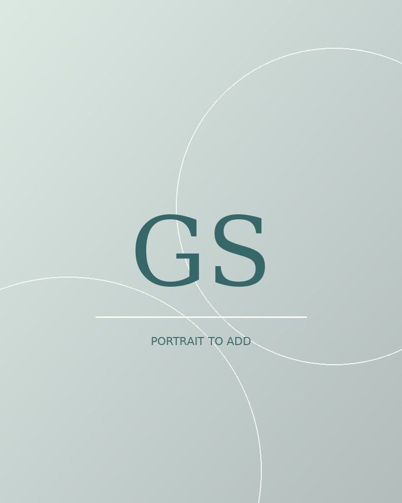

↗
Energy & thermal systems
Heat transfer, thermodynamics, heat pumps, district heating and techno-economic evaluation.
PHYSICS · EFFICIENCY · SUSTAINABILITYEnergy systems, computational engineering & applied AI.
B.Sc. student in Mechanical Engineering at EPFL, currently on academic exchange at the Technical University of Denmark (DTU). I combine physical modelling, numerical methods, and programming to answer practical engineering questions.

From fundamental mechanical engineering to data-driven methods, my work aims to connect models with physical reality and quantify how engineering decisions perform under real constraints.
Heat transfer, thermodynamics, heat pumps, district heating and techno-economic evaluation.
PHYSICS · EFFICIENCY · SUSTAINABILITYFinite elements, computational simulation, convergence studies and thermal–structural coupling.
FEM · FORTRAN · VALIDATIONMachine learning, computer vision, interpretable features and reproducible experimental pipelines.
PYTHON · DATA · ROBUSTNESSDesign from functional requirements to CAD, analytical sizing and engineering documentation.
CAD · DESIGN · MANUFACTURINGAn end-to-end screening study of how low-temperature waste heat could be upgraded through heat pumps and supplied to district heating networks.
Rather than assuming that all recovered heat is useful, the model checks hourly heat availability, customer demand, required temperature lift, electricity consumption, and the economics of dispatch.

Technical projects with an emphasis on the problem, approach, personal contribution, evidence and limitations. Use the arrows, keyboard or swipe to browse one at a time.
Two complementary paths: a quantitative foundation in engineering, and hands-on work in technical projects, teamwork and community initiatives.
Academic exchange · Mechanical Engineering
Kongens Lyngby, Denmark
Courses in Heat & Mass Transfer, Finite Element Methods and Deep Learning, with technical group assignments combining modelling, programming and validation.
B.Sc. Mechanical Engineering
Lausanne, Switzerland
Mechanical sciences, thermodynamics, mathematics, numerical methods, CAD and engineering programming. A multidisciplinary foundation in the analysis and design of physical systems.
 EPFL AI TEAM
EPFL AI TEAMEPFL AI Team · REPLAY
Contributing to the machine-learning layer of REPLAY, a student-built football analysis platform. I work on tactical feature logic, structured retrieval, pipeline integration, testing and failure analysis to turn tracking data into explainable coaching insights.
Corporate Partnerships
External relations and corporate partnerships alongside engineering studies, with experience in communicating with teams and external stakeholders.
Project Lead · Volunteer initiative
Fundraising and project coordination for a volunteer initiative, with approximately €5,000 raised according to the original portfolio records.
Methods, programming languages and engineering tools used in academic and independent projects, with a preference for transparent, testable results.
I am spending the autumn semester at DTU, working on thermal modelling, FEM-based thermoelasticity and molecular ML coursework while contributing to REPLAY at EPFL AI Team.
Interested in exchanging ideas around energy transition, computational engineering, applied AI and engineering projects that connect code with physical systems.
Open to conversations about mechanical engineering, energy systems, applied machine learning and collaborative technical projects.